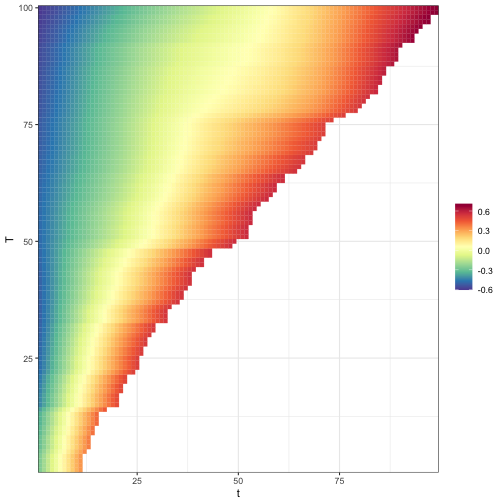

2024_October_Top40
Intro
AI
tidyllm v0.1.0: Implements a tidy interface for integrating large language model (LLM) APIs such as Claude, ChatGPT, Groq, and local models via Ollama into R workflows and supports text and media-based interactions, interactive message history, stateful rate limit handling, and a tidy, pipeline-oriented interface for streamlined integration into data workflows. See the vignette.
Data
openFDA v0.1.0: Facilitates access to U.S. Food and Drug Administrations openFDA data on drugs, devices, foodstuffs, tobacco, and more. See Kass-Hout et al. (2016) for background and the vignette to get started.
Medicine
Statistics
MECfda v0.1.0: Implements functions to solve scalar-on-function linear models, including generalized linear mixed effect model and quantile linear regression model, and bias correction estimation methods due to measurement error. Details about the measurement error bias correction methods. See Luan et al. (2023), Tekwe et al. (2022), Zhang et al. (2023), and Tekwe et al. (2019) for background and the vignette for an introduction.
VDPO v0.1.0: Provides a comprehensive set of tools for analyzing and manipulating functional data with non-uniform lengths, and addresses two common scenarios in functional data analysis: Variable Domain Data, and Partially Observed Data. See Amaro et al. (2024) for the details. There are two vignettes: Introduction and Model fitting for variable domain data.

second 20